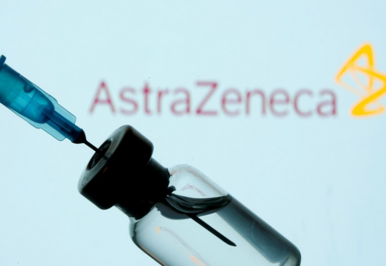

Швейцария отказалась от использования вакцины AstraZeneca
Швейцария отказалась одобрять вакцину AstraZeneca против COVID-19.Медицинский офис Swissmedic запрашивает дополнительные данные об эффективности и качестве вакцины.Страна также объявила, что заказала еще миллионы лоз у других производителей.

Швейцария, заказавшая 5,3 миллиона доз у AstraZeneca, заявила, что ожидает результатов испытаний вакцины в Северной и Южной Америке, в которых принимают участие десятки тысяч человек.Как сообщает Reuters (https://www.reuters.com/?edition-redirect=ru), проведенные ранее в стране эксперименты не дали четких данных, в том числе об эффективности вакцины для пожилых людей.
«Как только мы получим результаты, временное разрешение на использование вакцины может быть выдано в очень короткие сроки», — говорится в заявлении Swissmedic.«Исходя из имеющихся в настоящее время данных, решение не является положительным с точки зрения соотношения пользы и риска», — добавили в офисе.
AstraZeneca пообещала поделиться информацией с регулирующим органом по мере ее поступления.«Мы считаем, что наша вакцина эффективна, хорошо переносится и может оказать реальное влияние на пандемию», — заявили в компании.
AstraZeneca и ее партнер Оксфордский университет заявляют, что вакцина, уже одобренная примерно в 50 странах, имеет 76-процентную эффективность против каронавируса в течение трех месяцев после однократной дозы.По заявлению производителя, после получения второй дозы по крайней мере через три месяца после первой, эффективность возрастает до 82 процентов.
Однако некоторые европейские страны указывают на недостаток данных, особенно для пожилых людей.
Между тем швейцарское правительство заявило, что подписало соглашение с немецкой компанией Curevac и правительством Швеции о поставке 5 миллионов доз вакцин, предварительно договорившись о поставке 6 миллионов доз с американским производителем вакцин Novavax и еще 6 миллионов с Moderna.
Эти новые заказы предоставят Швейцарии в общей сложности более 30 миллионов доз, что достаточно для двойной вакцинации всего населения страны.В то же время развивающиеся страны остаются (https://karaulovlife.ru/news/nespravedlivoe-raspredelenie-vakcin-ugroza-vosstanovleniju-mira-posle-pandemii/) на обочине вакцинации и ждут, пока более богатые страны получат достаточное количество доз.
Правительство также сообщило, что в настоящее время ведутся дальнейшие переговоры с разработчиками других вакцин.
«Идея покупки вакцин у разных производителей заключается в том, чтобы гарантировать, что население получит достаточное количество доз одобренной вакцины, даже в случае проблем с доставкой», — заявили в местном министерстве здравоохранения.
Источник: https://karaulovlife.ru/news/shvejcarija-otkazalas-ot-ispolzovanija-vakciny-astrazeneca/
Подписывайтесь на «КарауловLIFE» в социальных сетях!
Вконтакте
Telegram
Одноклассники
YouTube
LiveJournal
Яндекс.Дзен
Posted On: 2021-02-04T12:40:00
Content Date: 2021-02-04
Download Date: 2021-06-20
Document ID: L0C04CWPD